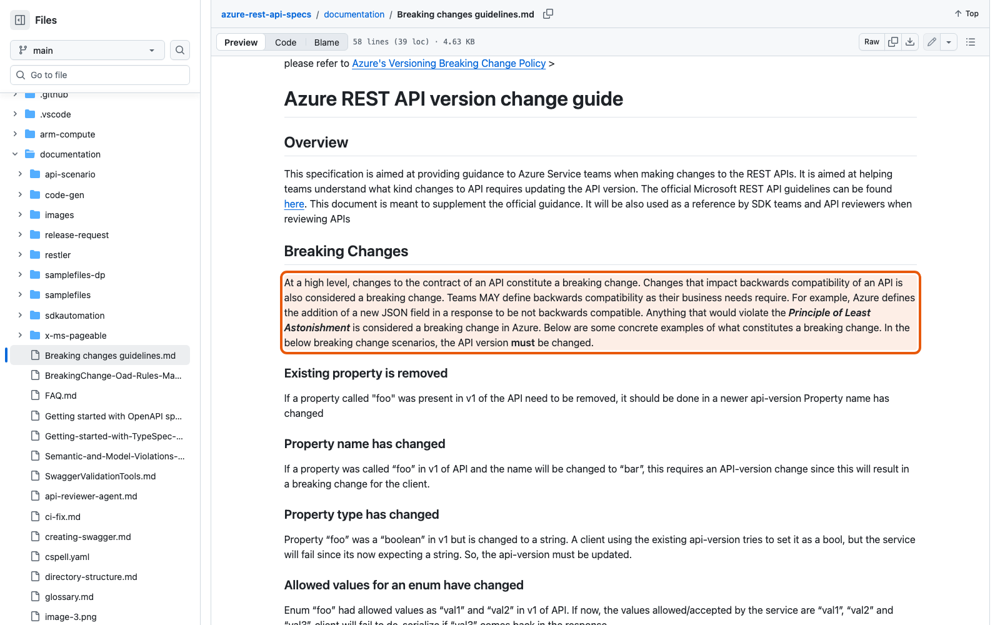
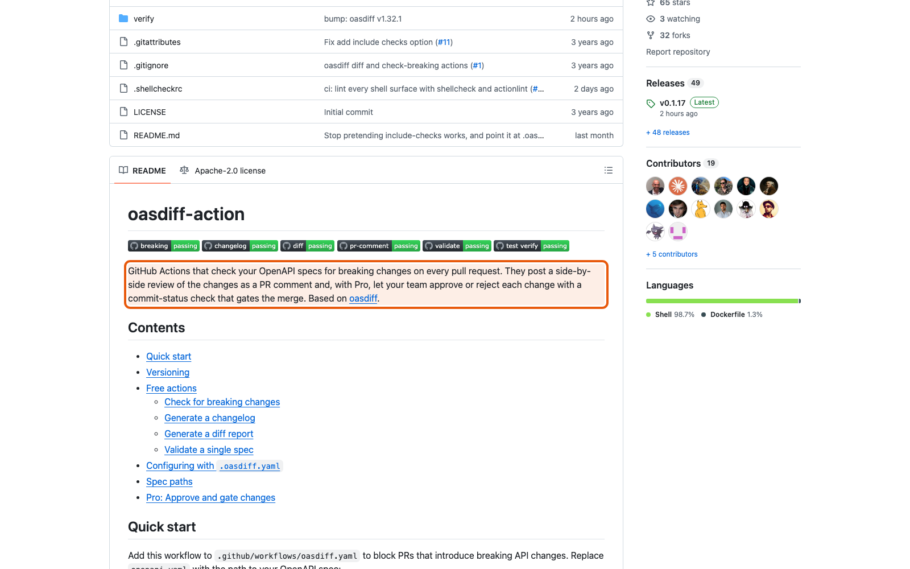

Справочник «Стандартизация HTTP API» · модуль 5 · Версии и изменения
Глава 5.2
Breaking
changes
Несовместимое изменение — это изменение, после которого работающий клиент перестаёт работать. Звучит просто, пока не выясняется, что одно и то же изменение GitHub считает безопасным, а Azure — ломающим. Разберёмся, откуда берётся это расхождение, что делать со своим API и как поручить проверку машине.
«Совместимость — не свойство изменения. Это ваше решение, записанное заранее.»
- Категория
- Версии
- Уровень
- Средний
- Связанные главы
- 5.1 Четыре номера · 6.4 CI и поиск breaking changes · 5.3 Deprecation и Sunset
- Зачем это знать
- Чтобы не сломать чужой код изменением, которое казалось безобидным
§1Что значит «сломать клиента»
Определение звучит одинаково у всех, и оно намеренно широкое.
GitHub Docs, API Versionsправила компании
«Breaking changes are changes that can potentially break an integration.»
Перевод. Breaking changes — это изменения, которые потенциально могут сломать интеграцию.
Ключевое слово — potentially. Речь не о том, сломалось ли что-то у конкретного клиента, а о том, могло ли сломаться. Поэтому бесспорных случаев немного, и начинать стоит с них.
- удалить операцию
- переименовать поле ответа
- изменить тип поля
- сделать необязательный параметр обязательным
- убрать значение из перечисления
- ужесточить проверку тела запроса
- добавить новую операцию
- добавить необязательный параметр
- добавить новый заголовок ответа
- исправить опечатку в описании
- добавить новый код ответа в новой ситуации
А теперь про середину, где и живут все споры.
§2Спорный случай: новое поле в ответе
Вы добавили в ответ поле priority. Старые клиенты о нём не знают. Сломается что-нибудь?
{ "id": "a8d0…", "title": "Не работает VPN", "status": "open" }{ "id": "a8d0…", "title": "Не работает VPN", "status": "open", "priority": "high" }клиент читает нужные ему поля и пропускает остальные. Так работает большинство разборщиков JSON по умолчанию.
клиент проверяет ответ на строгое соответствие схеме и падает на незнакомом поле; или сохраняет ответ целиком туда, где есть ограничение на состав полей.
Обе ситуации реальны. Именно поэтому крупные компании пришли к разным выводам — и обе записали свой вывод в правилах.
§3Два ответа: GitHub и Azure
GitHub относит добавление поля в ответ к совместимым изменениям и перечисляет его в списке того, что выпускается без новой редакции API.
Azure, Breaking changes guidelinesправила компании
«Teams MAY define backwards compatibility as their business needs require. For example, Azure defines the addition of a new JSON field in a response to be not backwards compatible.»
Перевод. Команды MAY определять обратную совместимость так, как требуют их задачи. Например, Azure считает добавление нового поля JSON в ответ не обратно совместимым изменением.

| Изменение | GitHub | Azure |
|---|---|---|
| Добавить поле в ответ | совместимо | несовместимо |
| Добавить необязательный параметр запроса | совместимо | совместимо |
| Удалить поле ответа | несовместимо | несовместимо |
| Что требуется от клиента | игнорировать незнакомые поля | — |
§4Почему оба правы
Разница не в аккуратности, а в том, кто клиент.
Миллионы независимых клиентов, которых нельзя ни собрать, ни обновить. Дешевле один раз потребовать «игнорируйте незнакомые поля» и дальше свободно добавлять поля.
Клиенты — в основном генерируемые SDK и инструменты развёртывания, которые сверяют ответ со схемой строго. Новое поле для них — изменение модели, и его нужно провести через версию.
Отсюда главный вывод главы: совместимость — не свойство изменения, а решение команды. Правильное решение то, которое записано и одинаково применяется. Незаписанное решение хуже любого из двух вариантов, потому что каждый участник считает по-своему.
Если ваша политика требует от клиентов игнорировать незнакомые поля — напишите это в контракте прямым текстом. Тогда добавление поля перестаёт быть спором и становится обычным MINOR.
§5Политика учебного проекта
В проекте выбран подход GitHub, и выбор записан в docs/VERSIONING.md вместе с обязанностью клиента.
В этом проекте принято правило GitHub, поэтому клиенты MUST игнорировать неизвестные поля ответа. Несовместимыми считаются и допускаются только в новой мажорной версии: - удаление или переименование endpoint; - удаление или переименование поля ответа; - изменение типа поля; - добавление обязательного параметра или обязательного поля запроса; - удаление значения из enum; - ужесточение требований аутентификации или лимитов.
Список короткий и закрытый — это важнее, чем его полнота. Спор «ломает или нет» сводится к вопросу «есть ли это в списке», а если случая в списке нет, список дополняют отдельным изменением, а не решают на ходу.
Ужесточение лимитов — изменение, которое легко не заметить: описание операции не меняется ни на строку. Но клиент, который присылал 100 запросов в минуту, начнёт получать 429. Для него это поломка, поэтому в проекте она приравнена к несовместимым.
§6Проверка машиной: oasdiff
Держать список в голове бесполезно. Есть инструмент, который сравнивает два описания OpenAPI и сообщает о несовместимых изменениях: oasdiff.
Проверим на учебном контракте. Уберём из схемы обращения обязательное поле title и сравним новое описание с прежним:
docker run --rm -v $(pwd):/specs tufin/oasdiff breaking \ /specs/base.yaml /specs/revision.yaml
4 changes: 4 error, 0 warning, 0 info
error [response-required-property-removed] at /specs/revision.yaml
in API GET /api/v1/tickets
removed the required property `items/items/title` from the response with the `200` status
error [response-required-property-removed] at /specs/revision.yaml
in API POST /api/v1/tickets
removed the required property `title` from the response with the `201` status
error [response-required-property-removed] at /specs/revision.yaml
in API GET /api/v1/tickets/{ticket_id}
removed the required property `title` from the response with the `200` status
error [response-required-property-removed] at /specs/revision.yaml
in API PATCH /api/v1/tickets/{ticket_id}
removed the required property `title` from the response with the `200` statusОдно изменение схемы — четыре ошибки, по одной на каждую операцию, где эта схема встречается. В этом и польза: человек, убирая поле, помнит про ту операцию, которую правил, и забывает про три остальные.
Ту же проверку выполняет сборка при каждом pull request — задача breaking-changes сравнивает описание из ветки с описанием в main и не даёт объединить изменение, если нашлись ошибки. Подробно про сборку — глава 6.4.

oasdiff/oasdiff-action/breaking с закреплённой версией — по тому же правилу, что и библиотека ReDoc в главе 3.4: версия внешнего инструмента всегда фиксируется.§7Чего oasdiff не видит
Инструмент сравнивает описания, а не поведение. Всё, чего нет в описании, для него не существует.
| Изменение | Видит ли oasdiff | Почему |
|---|---|---|
| Удалено поле ответа | да | Изменилась схема в описании |
| Параметр стал обязательным | да | Изменился признак required |
| Изменился порядок элементов списка | нет | Порядок в схеме не описан |
| Ужесточён лимит запросов | нет | Лимит не выражен в описании |
Поле status стало возвращать новое значение | только если перечисление объявлено | Без enum сравнивать нечего |
| Изменился смысл поля при том же типе | нет | Смысл — в тексте описания, а не в схеме |
Отсюда два практических следствия. Первое: чем подробнее описание, тем больше находит машина — объявленное перечисление ловит ошибку, необъявленное не ловит ничего. Второе: проверка машиной не отменяет ревью человеком, и именно поэтому изменение контракта в проекте требует и зелёной сборки, и одобрения владельца.
При подготовке этого справочника oasdiff не счёл удаление устаревшей операции GET /tickets/open ошибкой — она была помечена deprecated. Для клиента, который ею пользуется, это тем не менее поломка. Вывод инструмента — довод, а не приговор.
§8Частые ошибки
§9Проверьте себя
- Почему в определении breaking change стоит слово «потенциально»?
- Приведите по три бесспорно ломающих и бесспорно безопасных изменения.
- Почему GitHub и Azure по-разному оценивают добавление поля в ответ? Свяжите ответ с тем, кто их клиенты.
- Какую обязанность накладывает на клиентов политика учебного проекта и где она записана?
- Почему удаление одного поля из схемы дало в выводе oasdiff четыре ошибки?
- Назовите три изменения, которые oasdiff не поймает, и объясните, почему.
может сломать интеграциюпотенциально, не фактическиновое поле в ответеGitHub — можноAzure — нельзяполитику записатьсписок закрытыйoasdiff breakingзадача breaking-changes в CIплюс ревью человекаСправочник «Стандартизация HTTP API» · модуль 5 · глава 5.2Макаров Максим Николаевич